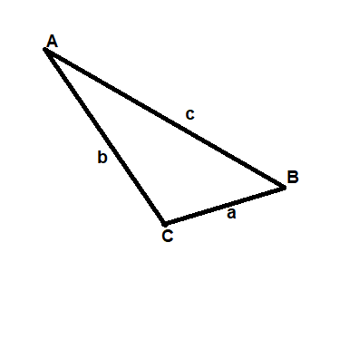
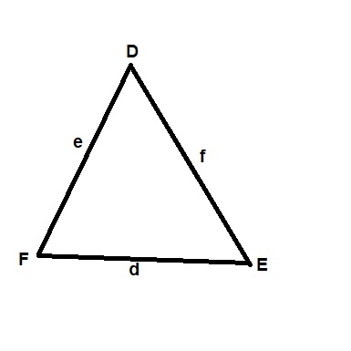
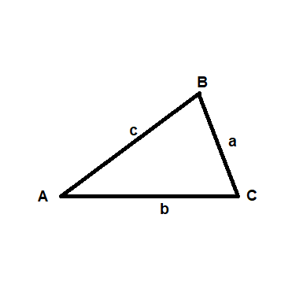
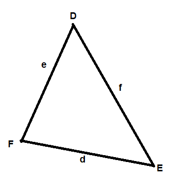

| Problem | Triangle | Measurements | Result |
|---|---|---|---|
| Law of sines | |||
| a=3 c=7 A=15° B=?° |
 | 3/sin(15°)=7/sin B 3/.26=7/sin B 1.82=(3)sin B sin^-1(.61)=B=37.35° |
B=37.35° |
| D=30° E=72° d=5 e=? |
 | 5/sin(30°)=e/sin(72°) 5/.5=e/.95 e/2=(5)(.95) e=4.75*2 e=9.5 |
e=9.5 |
| Law of cosines | |||
| a=7 b=10 c=15 B=?° |
 | 10^2=7^2+15^2-(2)(7)(15)cos B 100=274-210 cos B 100-274=210 cos B -174=210 cos B cos^-1(-.83)=B=145.95° |
B=145.95° |
| F=60° e=4 d=3 f=? |
 | f^2=4^2+3^2-(2)(3)(4)cos(60°) f^2=25-(24)(1/2) f^2=13 f=3.61 |
f=3.61 |